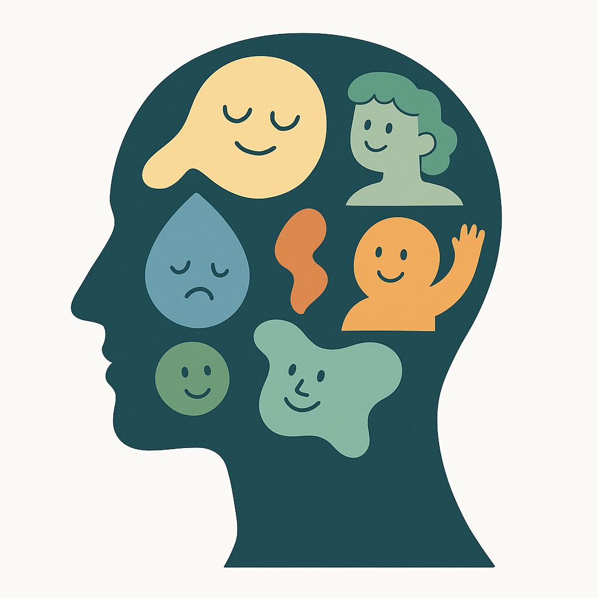

Internal Family Systems (IFS) ser sinnet som ett inre team av delar, var och en med egna känslor, behov och strategier. Genom att möta både starka och sårbara delar med medkänsla och nyfikenhet frigör vi energier som annars skapar inre konflikt och stress. Resultatet blir ökad självkännedom, djupare välmående och en stabil inre grund.
I coachingsessionerna utgår jag från IFS utan att följa modellen slaviskt. Vi arbetar med guidade reflektioner, visualiseringar och konkreta övningar för att kartlägga dina delar, identifiera hinder och integrera resurser. Fokus ligger alltid på eget självledarskap och långvarig balans.
För dig som individ innebär metoden bättre stresshantering, ökad emotionell intelligens och en tryggare relation till dig själv. När inre harmoni råder växer också kreativitet och handlingskraft.
För företag, ledare och team kan IFS-driven coaching förbättra samarbetet, stärka kommunikationen och skapa en kultur där balans och prestation går hand i hand – för hållbar framgång.
